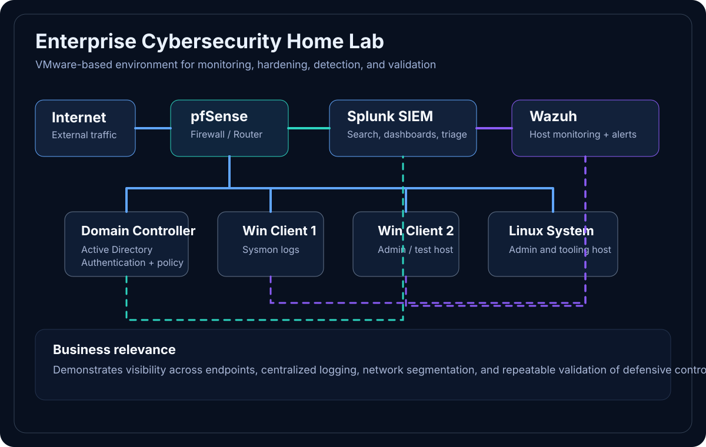
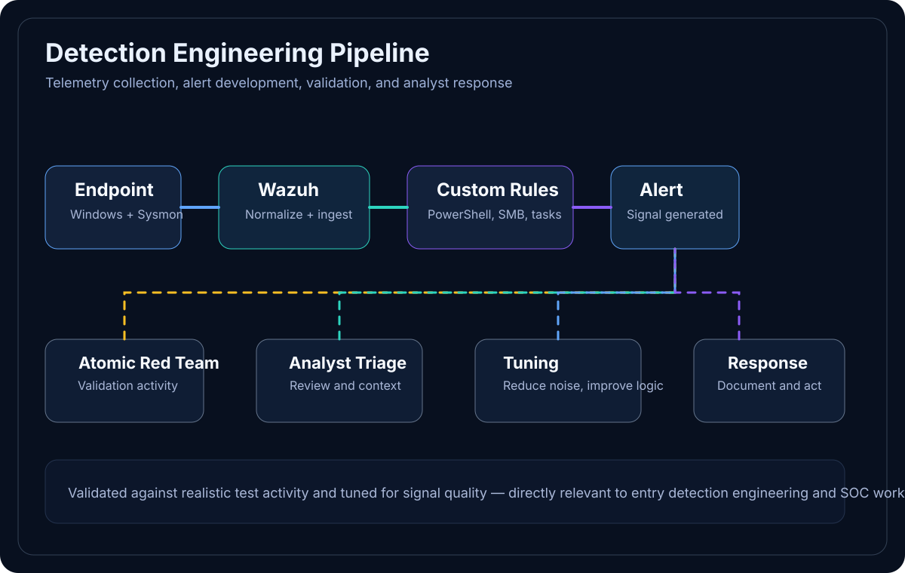

Who I am
I am a U.S. Navy Lieutenant and Cyber Operations graduate transitioning into civilian cybersecurity. My background combines operational leadership, technical training, and a strong bias toward preparation, reliability, and accountability.
I’m a Surface Warfare and Nuclear Officer with a Cyber Operations degree, an active TS/SCI clearance, and a hands-on home-lab portfolio spanning detection engineering, SIEM, vulnerability management, incident response, network analysis, and Windows hardening.
Background: My experience in mission-critical Navy environments shaped how I approach security work: with discipline, accountability, technical curiosity, and a strong focus on reliability.
My path into cybersecurity is grounded in a simple idea: the same discipline required to lead in high-consequence environments also matters in security work done well.
I am a U.S. Navy Lieutenant and Cyber Operations graduate transitioning into civilian cybersecurity. My background combines operational leadership, technical training, and a strong bias toward preparation, reliability, and accountability.
I’ve owned shipboard cybersecurity responsibilities, led a 20-person technical division in a nuclear environment, and built hands-on cyber projects focused on detection, monitoring, hardening, and response.
I value clear documentation, calm troubleshooting, steady follow-through, and continuous learning. That mindset connects my military experience with the security work I’m building toward now.
Across these roles, the common thread has been ownership, technical leadership, structured problem-solving, and steady execution in environments where reliability matters.
Owned cybersecurity posture for operational shipboard networks supporting mission-critical systems.
Led a 20-person technical division responsible for nuclear propulsion electrical systems.
Supported threat identification and email analysis in a real-world enterprise setting.
Contributed to applied cybersecurity research and technical analysis for national security systems.
These projects come from documented lab work and hands-on defensive practice, with a focus on monitoring, hardening, investigation, and detection.
Built a VMware-based Active Directory lab with centralized telemetry and custom detections for common attacker behavior.
These visuals give a clearer view of the lab environment, telemetry flow, and the type of evidence behind the portfolio work.

A VMware-based enterprise-style lab with Active Directory, Windows endpoints, Linux, Splunk, pfSense, and Wazuh.

Sysmon telemetry flows into Wazuh and custom rules are validated against realistic test activity for triage and tuning.
Best for showing search workflows, alert context, and analyst visibility.
Best for showing detections tied to PowerShell abuse, scheduled tasks, and SMB movement.
Best for proving remediation work and packet-level investigation skill.
My work is centered on defensive security fundamentals: visibility, investigation, hardening, detection, and the habits that make security operations more effective.
Splunk, Wazuh, Sysmon, Nessus, Wireshark, Atomic Red Team
Windows, Linux, VMware, Active Directory, pfSense, enterprise-style lab networking
Clear documentation, structured troubleshooting, training, risk ownership, and calm execution under pressure
I’m building toward work in security monitoring, detection engineering, vulnerability management, SOC workflows, incident handling support, and process-driven improvement.
Public projects, technical writing, and supporting materials make it easier to see how I think and what I’ve built so far.
Hands-on cybersecurity projects and lab work focused on blue-team and security operations practice.
View GitHub profileA concise overview of my background, technical direction, and current qualifications.
Open resume PDFA public write-up adds evidence of analysis, documentation, and communication.
Read the APT29 TTP write-upA straightforward overview of education, certifications, and where I’m headed next.
United States Naval Academy
Seeking full-time cybersecurity opportunities starting Winter 2026 / early 2027.
I’m always glad to connect with people working in cybersecurity, especially around security engineering, detection, SOC, blue-team, incident response, and security operations.